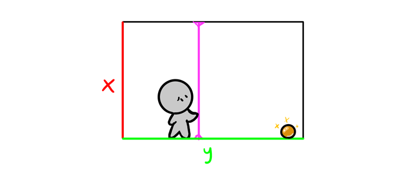

Freehand perspective and drawing in 3D
Perspective is something that brings math and geometry to mind, and it doesn’t seem to have anything to do with free, creative drawing you’re interested in. But perspective isn’t only about drawing architecture and vehicles—it applies to all 3D objects, even the living ones. It gives the volume to their bodies, making them look real and 3D on a flat sheet of paper. When you know perspective, you can draw your creatures in all views and poses without any limits—everything you can imagine! And this is what I’d like to teach you today: how to add another dimension to your drawing without making it boring and mathematical.
What is Perspective?
Let’s start with answering this basic question. A sheet of paper is two dimensional—it has two dimensions, height and width. Together they make a plane: a 2D space where 2D objects can be placed. If you lived on such a plane, you could only go up, down, left, and right.
The third dimension is depth. It lets you go around within the space made of infinite number of 2D planes stuck together as pages of a book.

Why Objects Are Distorted in Perspective
However, it’s not completely true that we can’t see three dimensions at once—we can, but they’re always reduced to a 2D view. We see that reduction as distortion—one dimension must be shortened to make some space for another one.
That distortion is very regular. In fact, we can easily imagine a full 3D shape (or, rather: other 2D views) of something just by observing how it changes during rotation. Our brains know the rules of perspective perfectly—but it doesn’t mean we know them consciously. So let’s analyze the basics one by one. First thing: when you rotate an object around one dimension (here: the red one), it stays unharmed. Its the other two (blue and green) that swap their lengths and position. Analyze this illustration step by step to understand what I’m talking about.
Exercise 2: the Ellipsoid
I’ve used cubes/boxes as an example, but in free drawing we don’t use them very often. A more universal shape is ellipsoid: a form with three ellipses as its 2D planes. Looks complicated? Actually, an ellipsoid is easier to draw in perspective than a box, because you only need these three ellipses, not the three inner planes and six outer walls!
Although you don’t need to draw the outer walls, you still need to create the edges of each ellipse in some way. An ellipse in perspective is always an ellipse, but it’s using a different set of axes than you could think. So how to draw an ellipse in perspective, when the axes don’t have right angle between them anymore?